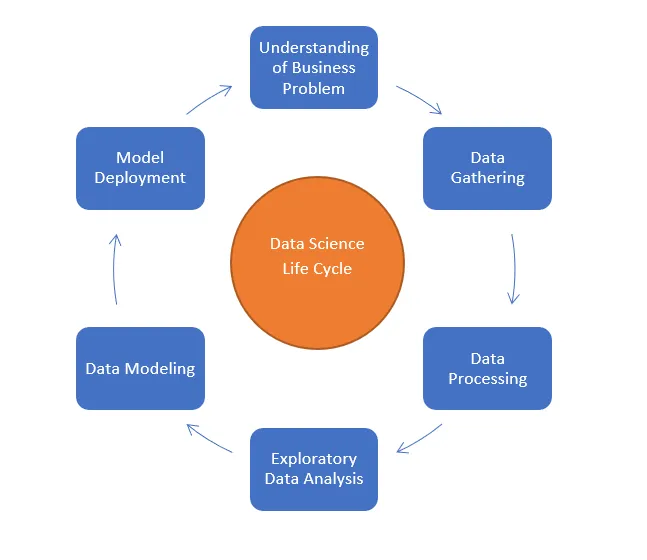
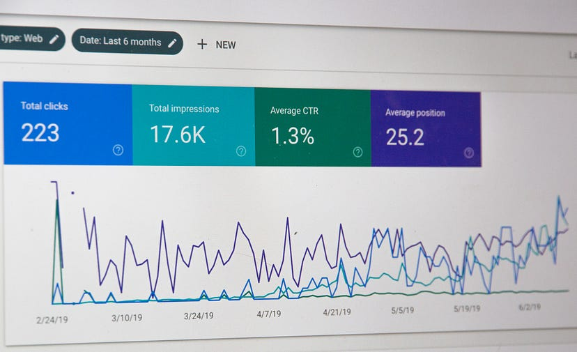
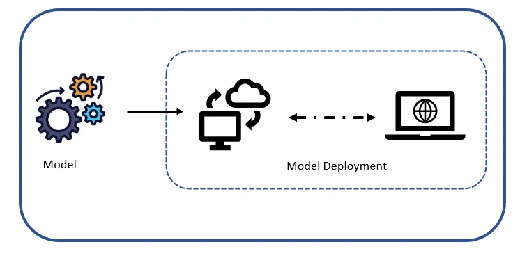

Content:
Why do we need Data Science Life cycle?
This article is originally posted on medium, link is given below.

Data Science Life Cycle
Data science is the study of data, which combines various disciplines all together to resolve the business problems. There is no specific set of defined problems, it can be anything or from any domain.
Data science has defined a standard way to approach any business problem which is called data science life cycle (DSLC). DSLC is a combination of multiple processes which we will see in details in this article.
Why do we need Data Science Life cycle?
Data Science Life cycle (DSLC) is a step-by-step procedure to handle business problems. Data scientist must follow DSLC while working on any data science project to avoid any confusion. It also helps to track the project performance properly and understand the root cause of the problem because of it’s consistent steps. Steps involved in DSLC are as follows:
Photo by Jonathan Forage on Unsplash
“Suppose, Mohan started his adventurous journey with his friends and unfortunately he gets separated from his friends in the middle. Now, he is all alone in an unknown place. suddenly, he realizes that he doesn’t know his destination also because he did not discuss journey plan with his friends, he was just enjoying the route.” 😮
Now, I hope you can better understand from the above example that it can happen in our project journey also if we don’t have proper understanding of our business problem and project roadmap.
It is required to have a good discussion with the stakeholders and top managements about business problem and their expectation from the team. To make this easy, we should have clear idea of below questions before deep dive into ant project.
What is the business requirement?
Why do we need to do this?
What is the expectation from the project?
What are the business constraints involved in project?
What is the acceptable margin?
how can we get the required data?
These are few examples. It can vary based on your project requiremets and expectations.
Data is like a fuel for any data science project. If we don’t have proper data and it’s understanding, it is very difficult to get meaningful insights out of it. we need to have proper discussions with domain experts about the route cause of the problem. We need to collect all data which can be a potential reason for the problem. If data is already available, it is good otherwise we need to talk to the respective teams to provide required data. It is very import to capture all possible scenario in our data sample.
There can be various types of data possible for a data science project. For example, if we are working on forecasting project, we will using time series data. If we are working on image analytics, we will be working on image dataset.
Photo by Joshua Sortino on Unsplash
Data processing is the combination of multiple processes like data cleaning, feature engineering, feature selection etc..
Few of the important steps, of data processing can be seen below:

Photo by Stephen Phillips - Hostreviews.co.uk on Unsplash
Once, we are done with data processing, we should analyze the data to get meaning insights from it. This method includes in-depth analysis of data using statistical approaches and graphs like bar graphs, scatter plot etc.
This step is very important because it helps us to understand the data pattern and improve our model performance.
Photo by Laura Ockel on Unsplash
This step is the core of the data science life cycle (DSLC). In this step, we transform our data into our desired form and use it for further applications. This step includes identification of proper method (selection of an appropriate techniques like classification, regression or clustering) and selection of data model. Once, model is selected, we need to focus on hyper parameters tuning which is directly related to model performance. Optimization of hyper parameters help to achieve best possible performance of the model. Model evaluation is also an integral part of model performance optimization. Model evaluation metrics (mse, mspe, log-loss, ROC-AUC curve etc..) should be selected in such a way so that it can calculate errors after each steps which should be handled by model optimizer.

Model Deployment
This is the final stage of data science life cycle. Once model is optimized and ready to use, we need to deploy it in production environment so that it can be used for further applications.
This step varies based on the end user requirement. We need to transform our model output in desired format so that it can fulfil business requirement.
Data science life cycle is an essential and integral part of any data science project. This article covers basic steps involved to resolve a data science problem but it can contain more steps as per requirement of any projects.
A person, who is working in data science domain, must know data science life cycle and its applications.
At the end, I wanted to thank all of you.
Stay tuned..! Keep the data flowing……! See you in the next article….
https://www.geeksforgeeks.org/data-science-lifecycle/
https://www.datascience-pm.com/data-science-life-cycle/
https://aws.amazon.com/what-is/data-science/
https://www.ibm.com/topics/data-science
https://mustafaserdarkonca.medium.com/data-science-life-cycle-e4d74afe4bf5
https://www.datarobot.com/wiki/data-science/
https://www.science.org.au/curious/people-medicine/what-science
https://leverageedu.com/blog/branches-of-science/
https://www.indeed.com/career-advice/career-development/branches-of-science